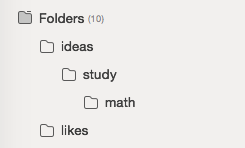
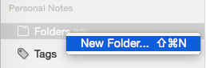
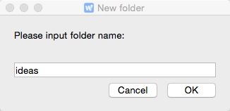
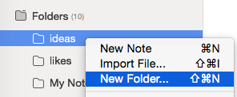

Create a Note Folder
WizNote offers multi-layered folders to help you organize notes.

- Right-click "Folders" on the leftmost bar.
- Input a name, for instance, "ideas", and click "OK" to get a new folder.
- Right-click "ideas" and select "New Folder" to get its subfolder.